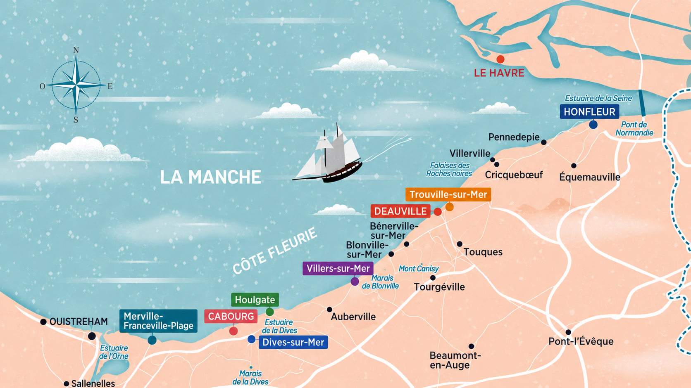

Autour de moi
Découvrez les lieux et bonnes adresses à proximité de votre position.
Nos bonnes adresses, plages, activités et coups de coeur pour profiter pleinement de la Côte Fleurie.
La Côte Fleurie
Explorez le guide

La Côte Fleurie
La Côte Fleurie